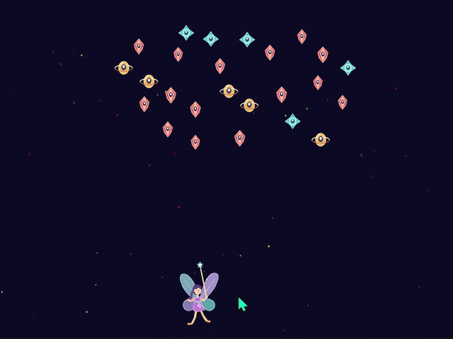
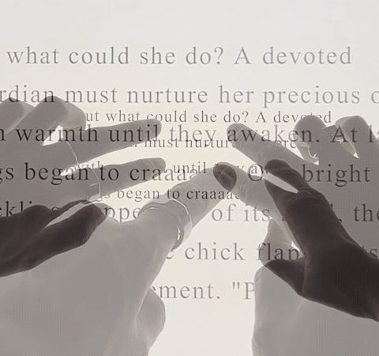
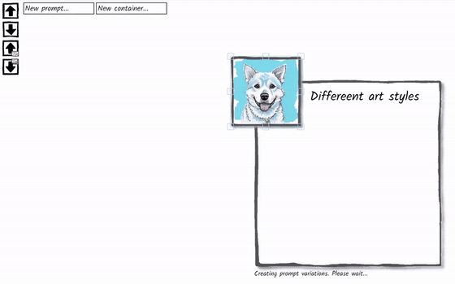

2023 — today
Media that come alive
Generative AI as an interactive, living medium.
Why it matters
Chat made generative AI widely accessible, but a text box is only one way to work with models that generate images, video, and interfaces. I explore ways to guide these models directly through gestures, sketches, and spatial layouts, giving people more control as their ideas take shape.
Research & impact
My work explores AI beyond the chat box, from reusable prompting tools to canvases for developing ideas. It has received three Honorable Mention awards across CHI and UIST and led to eight patent filings. Alongside this research, I led work on image generation and image understanding in Copilot, and the generative image pipeline for Xbox Design Lab controllers.



Key papers
- ImaginationVellumUIST 2025 ★ Honorable Mention
An ideation canvas where spatial layout, generative strokes, and history become the prompt.
- AI-InstrumentsCHI 2025 ★ Honorable Mention
Prompts become reusable tools you apply directly to content.
- TexterialCHI 2026 ★ Honorable Mention
Shape text with gestures, using a language model to interpret your edits.
- Intent TaggingCHI 2025
Short prompts attached to specific parts of your content to guide generation.
- Live Artifacts2026
Dynamic media built from editable layers that retain the instructions used to generate them.
- Brushing & Interpretive LinkingGI 2026
Brushing and linking, reinvented for knowledge work with LLMs.
Product impact
- Copilot · Drawing in the Copilot app
Principal investigator for image generation in the Copilot app. I drove the Stable Diffusion technology end to end, ramped up the engineering team, and led responsible-AI communication for sketch-to-image.
- Microsoft Paint · Cocreator
Shaped the live AI sketching canvas that turns scribbles into art in Paint.
- Copilot · Image understanding
Led the analysis of how people use image input in Copilot, and shipped a small vision-language model to analyze images and suggest actions.
- Copilot · Computer-using agent
Built a computer-using agent that runs in a custom Linux container, and took it from leadership demo to product.
- Copilot Notebooks
Worked with the Loop design team on a hackathon prototype that combined existing content and AI summaries into new pages. This work helped shape Copilot Notebooks.
- Xbox · Design Lab
Principal investigator of the generative image pipeline that lets people design custom Xbox controllers.
Talks, demos & showcases
- 2026MLADS · Generative UI and the next interactive AI experiences
- 2026UX for Generative AI conference · Making AI interactive
- 2025Microsoft Research Showcase · Vibe Gaming, plus an 8-person hackathon on generative games presented to Xbox leadership
- 2025Microsoft Research Fair · ImaginationVellum, with private demos to Office AI and Gaming AI leaders
- 2024Research Demo Fair · Intent Tagging and micro-prompting with Copilot
- 2024New Future of Work report · AI-Instruments, Intent Tagging, and the intelligent canvas featured
- 2025–26Organizer · Generative UI workshop (Project Green) and the GUIDE Forum
Building the future
Five directions I’m building toward. Explore them in What if…
Pixel UI
Interfaces become generated, adaptive, and infinitely malleable. Every pixel can respond.
Kinetic Diffusion
Media becomes something you shape, not just consume. Artifacts stay alive and explorable.
Flowing Diffusion
Creation keeps pace with human intent. Interfaces emerge and evolve alongside thought.
Flux Diffusion
Reality becomes an editable canvas. Generative AI transforms the physical world in real time.
Coalescence
Intelligence becomes a place, not a tool. Agents, people, and artifacts share a living workspace.